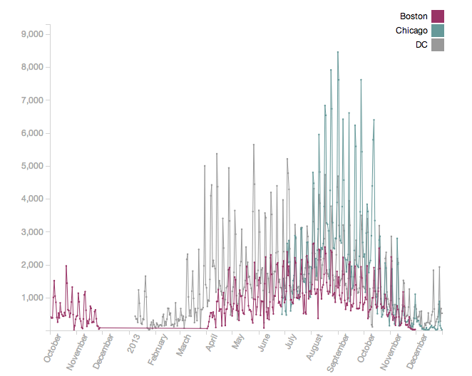
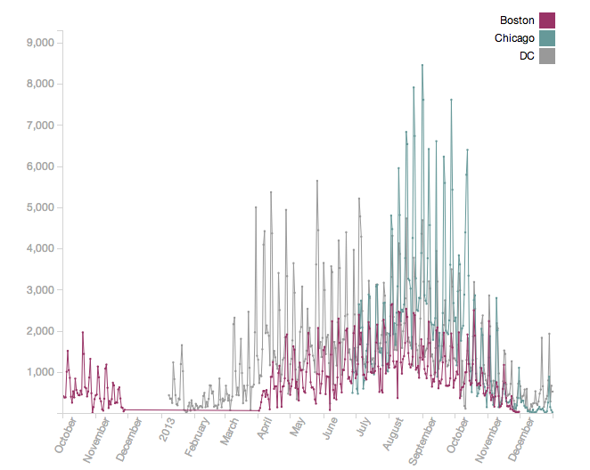

Introduction
Bike sharing is an increasingly popular mode of transportation within large cities such as Boston, New York, Chicago, D.C., and others. Unlike ride shares or car pooling where location and rides are relatively easy to adjust to rider volume and locations, bike sharing requires infrastructure carefully planned to accommodate riders at convenient locations and stocked to ensure availability of bikes. As the number of bike share users increases, it becomes increasingly useful for both bike program planners and bike share users to look at ride patterns in order to manage bike distribution or plan trips. For these reasons, a few bike share programs have released data on ride trips to encouraged clear and creative visualization through visualization challenges. Here, we take advantage of these available bike share data in three cities, Boston (Hubway), Chicago (Divvy), and Washington, D.C (Capital Bikeshare). to understand bike share usage in these three cities. We calculated four trip metrics from the bike data (average distance traveled, average speed of trips, total trips, and average trip duration) and divided the trips between trips by subscription riders (those paying subscriptions for bike usage) and casual riders (typically one-time or occasional users). These two sets of filters can be used to explore different facets of the data on both an overview and geographical scale (left and right in the visualization above). Using this visualization, we have discovered interesting patterns in bike usage between cities and between different groups of users as detailed below. We encourage you to explore the data to discover more for yourself!
The overview focus of our visualization is to compare ride patterns between cities. There has been some visualizations of bike share data within individual cities, but we found few that compared bike share patterns between cities.
Stories
1. Overall Trends between Cities
We see that there are overall higher numbers of subscriber trips in DC than in Boston or Chicago (left). This may be a result of the Capital Bikeshare program in DC being an older program (compared to Divvy Chicago which only started in June, 2013). However, although the Chicago program only started in 2013, the casual riders have quickly picked up the program as seen by the high peaks in for the total trips for casual riders (right). Other trends that can be found by looking at the trends at large include DC subscribers ride slower than subscribers in other cities but DC casual ride faster than in other others. This may be due to the fact that DC casual riders are concentrated in the Tidal Basin area - shown in story #4 - which does not have much traffic)
 

2. Seasonal Usage
3. Weekly Usage
speed, total trips, both overview and in popups!, sub vs casual
4. Stations Usage
DC total trips casual vs subscriber
5. See the Cherry Blossoms in DC
6. Boston Marathon 2012
only distance and kind of duration but nothing else
Using the Visualization
1. Control Bar
From top row, select a metric to display data of this metric in both the overview graph and map visualization. The four metrics are average distance traveled in a trip, average speed of trips, total trips (this metric is not averaged over days), and average trip duration.
From the bottom row, select the rider type, either casual riders or subscriber riders, to display. All three bike programs offer both subscriptions, aimed at riders who would frequently use bikes such as for commuting, and pay-per-trip, aimed at occasional riders or tourists.
Note: Some bike programs charge extra for long-distance rides. Users often swap bikes at intermediate stations to avoid this charge. The distance traveled per trip metric does not take this into account and counts each leg of the trip separately.
2. Overview Graph
The overview graph (left) displays ride data from October 2012 to December 2013. The display in the detail frame (top) can be controlled by brushing (drag mouse over the graph) over the overview frame (bottom). Click outside the brush to restore the detail frame.
Note: The three datasets we used had gaps in this time period as seen on the graph. Chicago Divvy only provided 6 month data, DC Capital Bikeshare only gave the annual data, and Boston Hubway did not offer service during the winter months in 2012.
3. Map Visualization
The map visualization (right) displays the ride metric for rides outgoing from each station which is plotted on the map. The size of the bubble for each station is scaled to the current metric. Zoom in and out of the map using the +/- on the top left corner or the mouse scrollwheel
Neighborhoods in each city is outlined in gray. Hover over a neighborhood to see its name.
<Click > on a station to see the name of the station and a bar graph of the distribution of selected metric averaged for each day of the week.
Enjoy!
Screencast
Links
Chicago Divvy dataBoston Hubway data
DC Capital Bikeshare data
Process Book